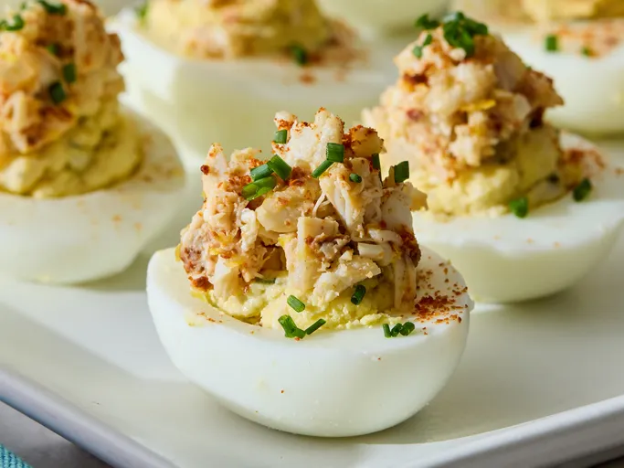

Crab Deviled Eggs

Description
These eggs are actually also stuffed with crab, not just topped with crab. They are extremely easy to make.
Ingredients
- 6 large eggs
- 4 ounces fresh crab-meat, divided
- 3 tablespoons mayonnaise, or to taste
- 2 teaspoons chopped fresh tarragon
- 1 teaspoon Dijon mustard
- 1 teaspoon lemon juice
- ½ teaspoon hot pepper sauce, or to taste
- 1 pinch seafood seasoning (such as Old Bay®)
- 3 drops Worcestershire sauce
- 1 pinch salt and freshly ground black pepper to taste
- ½ teaspoon freshly grated lemon zest
- 1 teaspoon creme fraiche, or more to taste
- ½ teaspoon Aleppo pepper
- 1 tablespoon chopped fresh chives, divided
- ⅛ teaspoon cayenne pepper, plus more for garnish
Steps
- Gather all ingredients.
- Place 6 eggs in the bottom of a pan and fill with cold water to cover. Place pan over high heat and as soon as the water starts to bubble and simmer and the eggs begin to dance around, turn off the heat, cover quickly with a tight-fitting lid, and let eggs sit for 17 minutes.
- Drain hot water from pan and add cold water to cover eggs, rolling them around in the pan. Drain and refill with fresh cold water; let eggs sit until cool, about 20 minutes. Peel eggs under running water to remove shells and cut in half lengthwise.
- Separate yolks from egg halves; place yolks into a mixing bowl.
- Place crab meat onto a plate and separate into 2 equal portions, one containing the small bits and one containing the attractive larger pink chunks. Reserve portion containing larger chunks.
- Chop the portion of crab meat with the smaller chunks; add to egg yolks. Mash yolks with a fork. Stir in mayonnaise, tarragon, Dijon mustard, lemon juice, hot pepper sauce, seafood seasoning, Worcestershire sauce, salt, and black pepper.
- Transfer yolk mixture into a piping bag fitted with a medium tip. Pipe crab filling into cavities of egg halves.
- Chop largest crab pieces and place remaining crabmeat into a small bowl. Lightly stir in lemon zest, creme fraiche, Aleppo pepper, and cayenne pepper with a fork. Taste and adjust salt. If mixture seems dry, stir in more creme fraiche.
- Top each stuffed egg with a generous pinch of crab mixture.
- Sprinkle each deviled egg with a pinch of chives and a light dusting of cayenne pepper. Transfer eggs to a serving platter; refrigerate until serving time.
- Serve and enjoy.
Home